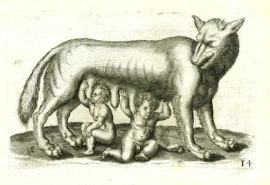

Remus Lupin
En fin des années 90, Rémus Lupin devient professeur des «Défense contre les forces du Mal» à Poudlard, il cache un secret que seulement peu de personnes connaissent.
Étymologie
Remus Lupin Rémus, de la mythologie romaine, est le fondateur de la ville de Rome, il a été adopté et allaité par une louve. Et Lupin qui signifie Loup en Latin.
La louve allaitat-nt Remus et Romulus
Histoire
Remus Lupin était un enfant de nature calme et intelligent, dès jeune âge il est fasciné et excelle en magie. Un jour l’infâme loup-garou Fenrir Greyback, par rancune envers le père de Remus, d’avoir jugé les loups-garous de « Créatures dépourvues d’âme, diaboliques, ne méritant que la mort. » décida d’attaquer son fils il y parvient et s’échappe par la suite. La morsure transformera Remus en
Remus Lupin
Impact sur la vie
Remus n’avait pas le droit d’avoir d’amis, par prudence de ne pas révéler sa lycanthropie à son entourage. La famille était obligée de rester isolée et discrète pour éviter les moindres soupçons. Il passe donc la plupart de son enfance seul et malheureux. Tous les trois jours de pleines lunes, Remus était enfermé dans une pièce durant sa transformation. Etant un loup-garou, il sait qu’il ne pourra jamais entrer à Poudlard, mais le contraire se produit, Albus Dumbledore lui rend visite, et lui demande d’entrer à l’école. Plus tard, Il rencontre James Potter, Sirius Black et Peter Pettigrew avec qui il devient proche. Malgré sa maladie ils considèrent Remus comme un membre de leur famille. Remus leur est très reconnaissant pour cela. Ils deviennent très célèbres parmi les élèves, et seront nommés les Marauders. Remus quant à lui il sera nommé le Lunard.
Les Maraudes
Transformation
La transformation mise au point dans cette œuvre semble rapprocher de la transformation classique d’un loup-garou, qui se produit durant la nuit d’une pleine lune. Elle prend place lorsque Remus est exposé au clair de lune, commençant par la pupille qui se dilate, les griffes noires et crocs sortent et son crâne se change en celui d’un loup.
Remus lupin en loup-garou
Symboles
La lycanthropie dans le film ne semblait pas avoir pour but d’angoisser les spectateurs. Ce serait plutôt une métaphore pour désigner les personnes qui souffre des maladies telles que le VIH et le sida.
Bande-annonce du film:
Films du même genre:
Howl (2015)
Van Helsing (2004)
Red Riding Hool (2011)
Wolfman (2010)